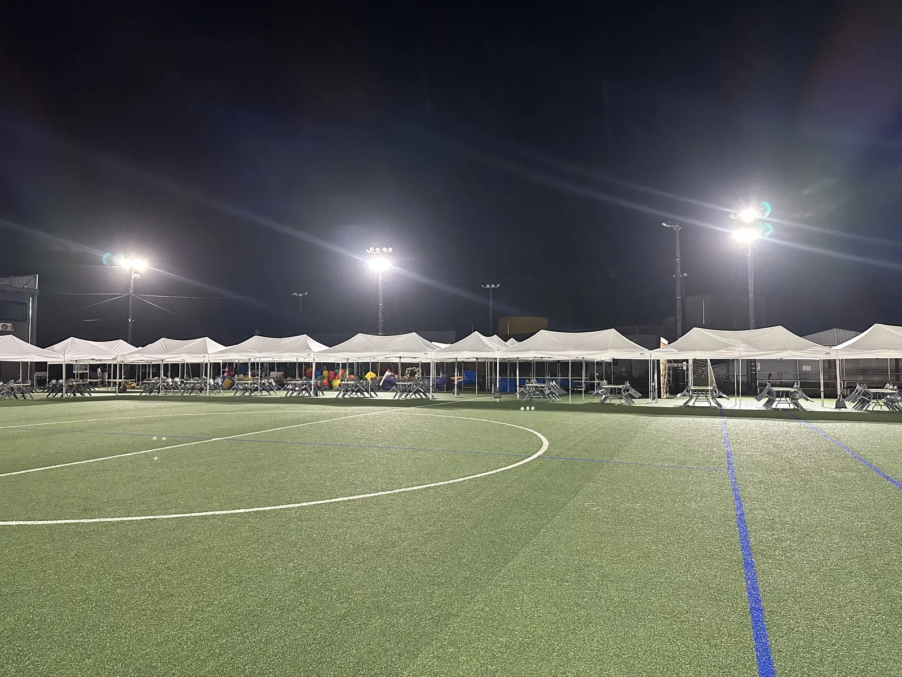
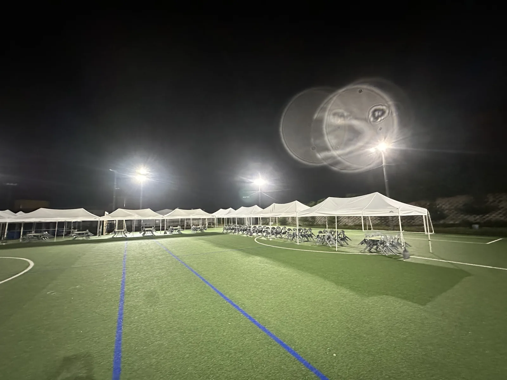

동문 체육대회 · 직장 풋살 대회는 퇴근 뒤 저녁에 열리는 경우가 많습니다. 낮 체육대회와 달리 조명, 인조잔디 고정, 야간 철거 세 가지를 따로 준비해야 합니다. 충북 풋살장과 잔디 운동장 현장을 기준으로 적습니다.

인조잔디에는 팩을 절대 박지 않습니다
인조잔디는 밑에 배수층이 있어 팩을 박으면 시설 손상입니다. 천막은 물통 웨이트 4~6개로 고정하고, 천막 다리 밑에 고무판을 깔아 잔디를 보호합니다. 경기 라인 안쪽으로는 장비를 놓지 않고, 골대 뒤 · 사이드라인 바깥에 천막을 세웁니다.

조명은 경기장 조명 "빈 자리"를 채웁니다
풋살장에는 보통 경기장 조명이 있습니다. 문제는 천막 아래 응원석과 급수대가 그 조명의 그늘에 들어간다는 점입니다. 천막마다 LED 작업등 1개, 급수대 · 본부석에 2개를 달면 됩니다. 무대(시상식)가 있으면 스팟 조명 2개를 추가합니다.
- 천막 1동당 LED 작업등 1개
- 본부 · 급수 · 시상 공간은 2개씩
- 전기는 경기장 콘센트 확인 → 부족하면 발전기

응원석 의자 · 급수 · 본부
팀당 천막 1동(3×3m)에 의자 10~12개가 기본입니다. 팀이 8개면 천막 8동 + 본부 1동 + 급수 1동 + 시상 · 음향 1동으로 11동. 급수대는 경기장 출입구 옆, 본부는 경기장 전체가 보이는 자리에 둡니다.
야간 철거는 소음이 관건
밤 10시 마감 행사는 주변이 주택가인 경우가 많습니다. 철거 때 천막 프레임 소리를 줄이려고 천막을 접어서 옮기고 차량에서 정리합니다. 30분 안에 조용히 빠지는 게 목표입니다.
자주 묻는 질문
Q낮 체육대회와 야간 행사 비용이 다른가요?
조명 · 전력 장비가 추가되는 만큼만 차이가 납니다. 항목별로 견적을 드리니 필요 없는 항목은 빼셔도 됩니다.
Q풋살장 관리자가 장비 반입을 제한하면요?
반입 조건(차량 진입 · 시간 · 고정 방식)을 미리 확인해 주시면 그에 맞춰 준비합니다. 인조잔디 보호 자재는 기본으로 가져갑니다.
Q제천 · 옥천 · 영동처럼 먼 곳도 야간 철거가 되나요?
네. 야간 철거 뒤 복귀까지 일정에 넣어 진행합니다. 일정이 늦은 행사는 다음 날 아침 철거로 조정할 수도 있습니다.